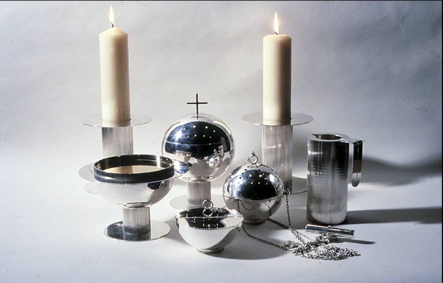

Saint Peter's Church, New York, NY
Comprehensive Design Project of Church by Lella and Massimo Vignelli
embody
everything i could ever want to be. after watching the film design is one, i was immediately inspired by the Vignelli's approach to
design
they stress critical thinking and purposeful work. this piece stood out to me. they designed the entire interior, furnitue, graphic design identity, and religious ceremonial tools of Saint Peter's church located in NYC
believers
that if you can design one thing adequatelly, you can design everything. they describe design as "fight against the ugliness"
